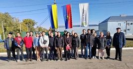
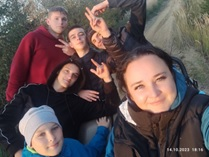

ХХІV Міжнародний конкурс з української мови імені Петра Яцика
Благодійний захід «Турбота про НЕЗЛАМНИХ»
ГРА-вікторина АВТОМОБІЛІСТ

Знання історії – фундамент нашої ідентичності
Кубок Хмельницької області з армрестлінгу
День визволення України від фашистських загарбників
РАДІОДИКТАНТ НАЦІОНАЛЬНОЇ ЄДНОСТІ-2023
Мова – мого життя основа
Всеукраїнський науково-практичний вебінар в рамках XV міжнародної виставки «Інноватика в сучасній освіті»
НАЛАГОДЖЕНО МОСТИ СПІВПРАЦІ
ВИЇЗНЕ ЗАНЯТТЯ НА БАЗІ МІСЦЕВОГО ПІДПРИЄМСТВА
Перемогли нацистів – переможемо і рашистів!
У ЮНОМУ ВІЦІ БАГАТО СПОКУС
СТУДЕНТСЬКА НАУКОВА КОНФЕРЕНЦІЯ
ВИЇЗДНЕ ЗАНЯТТЯ
ЗАНЯТТЯ-ЕКСКУРСІЯ
ЗАНЯТТЯ-ЕКСКУРСІЯ
Обережно! Вибухонебезпечні предмети!
Посади дерево – подаруй життя!
Всесвітній День ХЛІБА
Виїздне заняття провели для студентів спеціальності 201 «Агрономія»

Благодійно-профорієнтаційний захід
«Our lesson was not traditional one»
АТЕСТАЦІЙНА КАМПАНІЯ-2023 В ДІЇ
ЄВРОПЕЙСЬКИЙ ДЕНЬ ПРОТИДІЇ ТОРГІВЛІ ЛЮДЬМИ
ГУРТОЖИТОК – МІЙ ДІМ
ПРЕВЕНТИВНЕ ВИХОВАННЯ В ДІЇ
Засідання Ради з виховної роботи та студентських справ
Бібліотека – твоя синергія Перемоги
 Девіз Всеукраїнського дня бібліотек 2023 року ...
Девіз Всеукраїнського дня бібліотек 2023 року ...Студенти коледжу здійснили подорож на Прикарпаття

Онлайн-конкурс «Я – козацького роду»
Абетка ментального здоров’я студентів
ЕКСКУРСІЯ НА ПІДПРИЄМСТВО
Благодійно-просвітницький, профорієнтаційний захід
БЛАГОДІЙНИЙ ТУРНІР КОЛЕДЖУ З ВОЛЕЙБОЛУ
ЗАСІДАННЯ СТУДЕНТСЬКОГО САМОВРЯДУВАННЯ гуртожитку
ЗУСТРІЧ-ЗНАЙОМСТВО-ПРЕЗЕНТАЦІЯ
РОБОЧІ НАРАДИ ТА ЗАСІДАННЯ ЦИКЛОВИХ КОМІСІЙ
Відбулася ІV Всеукраїнська науково-практична конференція «Фахова передвища і професійна освіта: теорія, методика і практика»
На часі важливі питання виробничо-технологічної практики
Смаколики для «Котиків ЗСУ»
Легкоатлетичні змагання зі стрибків в довжину
Студентські будні
ЗАСІДАННЯ АТЕСТАЦІЙНОЇ КОМІСІЇ
ПРОФОРІЄНТАЦІЙНА РОБОТА В ДІЇ
Всесвітній день таблиці множення
Сьогодні практика, завтра реалії професійного життя
Засідання школи молодого викладача
«Наша воля , наша слава не вмре , не загине … »
ЗАСІДАННЯ ПЕДАГОГІЧНОЇ РАДИ
Засідання адміністративної ради
Стартувала Акція «СМІЛИВА ГРИВНЯ»
Легкоатлетичні змагання зі штовхання ядра
ЗАСІДАННЯ ВЧЕНОЇ РАДИ
Ранкові вітання вельмишановним викладачам
 Студенти І курсу А11, ЛМ11, ГДХ11 групи підготували для педагогів коледжу ранкові вітання ...
Студенти І курсу А11, ЛМ11, ГДХ11 групи підготували для педагогів коледжу ранкові вітання ...
82-роковини трагедії Бабиного Яру
Ознайомлювальна практика


ПРЕВЕНТИВНЕ ВИХОВАННЯ В ДІЇ
Благодійний ярмарок «ВСЕ БУДЕ УКРАЇНА»
Засідання профспілкового комітету
Студентсько - волонтерська ПЕКАРНЯ в дії!
Легкоатлетичні змагання з бігу
ІНТЕРНЕТ ШАХРАЙСТВО ТА КІБЕР БЕЗПЕКА В ІНТЕРЕНЕТІ
Щодо завершення збору підписів під петицією «Повернути землю студентам!»
Засідання методичного об’єднання кураторів
Триває декада спеціальності 205 Лісове господарство
ТУРНІР З ВОЛЕЙБОЛУ
ЕКСКУРСІЯ НА ПІДПРИЄМСТВО ПП «ДЖИВАЛЬДІС»
МИ ЗА МИР В УКРАЇНІ!
Педагогічний ОСКАР єднає, надихає і окрилює!
З 13 по 19 вересня поточного року в онлайн-режимі з метою промоції кращого педагогічного досвіду ...
Триває декада спеціальності «Лісове господарство»
КЛУБ «ЗДОРОВ’Я – це життя» в дії.
Всесвітня акція World Cleanup Day
Міжнародний день демократії
Триває предметний тиждень
Студенти гуртожитоку – одна велика дружня родина
ВІДКРИТТЯ СТУДЕНТСЬКОЇ СПАРТАКІАДИ 2023-2024н.р.
ЗАСІДАННЯ МЕТОДИЧНОЇ РАДИ КОЛЕДЖУ
ЗВІТНО-ВИБОРЧА КОНФЕРЕНЦІЯ СТУДЕНТІВ
ТРИВАЄ ТИЖДЕНЬ СПЕЦІАЛЬНИХ ДИСЦИПЛІН
ЗАСІДАННЯ СТИПЕНДІАЛЬНОЇ КОМІСІЇ
День працівників нафтової, газової, нафтопереробної промисловості та нафтопродуктозабезпечення
Міжнародний день грамотності
ДЕНЬ ФІЗИЧНОЇ КУЛЬТУРИ ТА СПОРТУ
З ДНЕМ ФІЗИЧНОЇ КУЛЬТУРИ І СПОРТУ!
Коледжі й училища мають відповідати запитам здобувачів фахової передвищої освіти, роботодавців і територіальних громад
ГУРТОЖИТОК – НАШ ДІМ
МІСЯЧНИК ПЕРШОКУРСНИКА В ДІЇ!
Місячник першокурсника.
 Бібліотека ВСП НФК ЗВО ПДУ продовжує залучати першокурсників до бібліотечного обслуговування. ...
Бібліотека ВСП НФК ЗВО ПДУ продовжує залучати першокурсників до бібліотечного обслуговування. ...Збори студентських колективів
АКЦІЯ: ВІДВІДАЙ! НИЗЬКО ПОКЛОНИСЬ!
Перший урок на тему "Живе і буде жити Україна, ніхто не спинить крил наших політ!”
ДЕНЬ ЗНАНЬ У НОВОУШИЦЬКОМУ ФАХОВОМУ КОЛЕДЖІ:МІЦЬ ДУХУ ТА ЄДНІСТЬ ВІДЧУВАЄМО КОЖНОЮ КРАПЛЕЮ ЗНАНЬ
Привітання директора коледжу
ЗАСІДАННЯ ТАРИФІКАЦІЙНОЇ КОМІСІЇ
ЗАСІДАННЯ ТАРИФІКАЦІЙНОЇ КОМІСІЇ
29 серпня День пам'яті захисників України
З Днем Незалежності України!
З ДНЕМ ДЕРЖАВНОГО ПРАПОРА УКРАЇНИ!
Засідання ПЕДАГОГІЧНОЇ РАДИ
ЗАСІДАННЯ МЕТОДИЧНОЇ РАДИ
Покладено початок плідної і корисної співпраці
ДЕНЬ МОЛОДІ! ВІТАЄМО!
ЗБОРИ ТРУДОВОГО КОЛЕКТИВУ
Засідання педагогічної ради коледжу
ПІДСУМКОВІ ЗБОРИ
НА КРОК БЛИЖЧЕ ДО МАЙБУТНЬОЇ ПРОФЕСІЇ!
Вступна кампанія - 2023
НОВОУШИЦЬКИЙ ФАХОВИЙ КОЛЕДЖ ВІТАЄ НОВУ ГЕНЕРАЦІЮ ВИПУСКНИКІВ 2023 РОКУ
Іспитова сесія
З ДНЕМ КОНСТИТУЦІЇ УКРАЇНИ!
Всесвітній День Охолодження
НЕ МОЖНА БУТИ ХОРОШИМ АГРОНОМОМ НЕ ПОЗНАЙОМИВШИСЬ З ЙОГО ВЕЛИЧНІСТЮ, ГРУНТОМ
ПІДСУМКОВА АТЕСТАЦІЯ – 2023
ДЕНЬ СКОРБОТИ І ВШАНУВАННЯ ПАМ’ЯТІ ЖЕРТВ ВІЙНИ В УКРАЇНІ
ВІДБУВСЯ ЗАХИСТ ЗВІТІВ ПРО ПРОХОДЖЕННЯ ПЕРЕДДИПЛОМНОЇ ПРАКТИКИ
На порядку дня - основні завдання виробничої технологічної практики
Студентська науково-практична конференція
Школа педагогічної майстерності
ЩОРІЧНЕ ЗВІТУВАННЯ ПЕДАГОГІЧНИХ ПРАЦІВНИКІВ ТА КЕРІВНИКІВ СТРУКТУРНИХ ПІДРОЗДІЛІВ
ВСЕУКРАЇНСЬКИЙ КОНКУРС «ПЕДАГОГІЧНИЙ ОСКАР –2023» – ФІНІШУВАВ!
ДЕНЬ ЗАХИСТУ ЛЮДЕЙ ПОХИЛОГО ВІКУ
НАВІКИ 25…
Міжнародний день друзів
ПЕРШІСТЬ КОЛЕДЖУ З АРМРЕСТЛІНГУ
ШКОЛА МОЛОДОГО ВИКЛАДАЧА
ВСЕСВІТНІЙ ДЕНЬ ОХОРОНИ НАВКОЛИШНЬОГО СЕРЕДОВИЩА
МО кураторів академічних груп
БЛАГОДІЙНИЙ КОНЦЕРТ НА ПІДТРИМКУ ЗСУ
ВСТУПНА КАМПАНІЯ 2023 – В ДІЇ!
ДЕНЬ ВІДКРИТИХ ДВЕРЕЙ
ВІЙСЬКОВО-НАВЧАЛЬНІ ЗБОРИ
ЗАСІДАННЯ ПЕДАГОГІЧНОЇ РАДИ
ЗАБІГ ЗАРАДИ МИРУ!
ДИТИНСТВО, ЮНІСТЬ, ОБПАЛЕНІ ВІЙНОЮ
АКЦІЯ «ВОЛОНТЕРСЬКА ОПІКА В ДІЇ»
ШКОЛА ПЕДАГОГІЧНОЇ МАЙСТЕРНОСТІ
Важливі питання освітнього процесу
МОВА НАША … наша зброя у борні за національну ідентичність
Педагог – це завжди активна, творча особистість…
УРОК ПАМ’ЯТІ ЖЕРТВ ГЕНОЦИДУ КРИМСЬКОТАТАРСЬКОГО НАРОДУ
ТОВАРИСЬКИЙ МАТЧ З ВОЛЕЙБОЛУ
ЗАСІДАННЯ КЛУБУ "ОСВІТА ДЛЯ ДОРОСЛИХ - ОСВІТА ПРОТЯГОМ ЖИТТЯ"
День пам'яті жертв політичних репресій
18 травня – Міжнародний день музеїв
ДЕНЬ ЄВРОПИ
Іспит на отримання посвідчення тракториста-машиніста категорії А1
ДЕНЬ НАУКИ УКРАЇНИ
Відкриття класу – лабораторії безпеки
БЛАГОДІЙНИЙ ВІРШОВАНИЙ ФЛЕШМОБ "ДЕНЬ ВИШИВАНКИ"
18 ТРАВНЯ -ДЕНЬ ПАМ'ЯТІ ЖЕРТВ ГЕНОЦИДУ КРИМСЬКОТАТАРСЬКОГО НАРОДУ
Всесвітній День Захисту Клімату
До Міжнародного Дня Сім’ї «Щаслива родина – душа України»
ВСТУПНА КАМПАНІЯ-2023 В ДІЇ!
ДЕНЬ МАТЕРІ